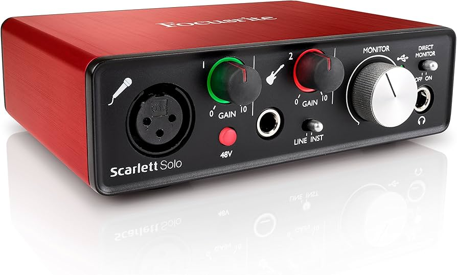

YOUR STUDIO.
YOUR SOUND.
Turn your laptop into a professional recording studio. From first idea to your first release — everything you need, step by step.
6 Steps to a Finished Track
Follow these steps in order and you'll go from no gear and no recordings to a published song on Spotify and Apple Music.
Choose Equipment
Microphone, audio interface, headphones, DAW — everything you need to get started, with budget options that actually work.
Song Skeleton
Map your song structure, set your tempo and key, and lay down guide tracks before recording anything real.
Recording
Capture vocals, guitar, bass, drums, and keys the right way — with golden rules that save you hours in the mix.
Mixing
EQ, compression, panning, reverb, and automation — turn a pile of recordings into a coherent, punchy track.
Mastering
Polish your mix for streaming platforms. Hit the right loudness targets. Make it sound great on every speaker.
Publishing
Distribute to Spotify, Apple Music, Bandcamp and beyond. Register for royalties. Launch your music to the world.
Join the Community
Ask questions, share your tracks, and connect with other home studio musicians. Every level welcome.
Choose Your Equipment
You don't need thousands of dollars. Here's exactly what to buy at every budget level to get professional-sounding recordings from your laptop.
| Item | Recommended | Budget Option | Price | Priority |
|---|---|---|---|---|
| Laptop | What you already have | MAc or I7 laptop | $0 | MUST HAVE |
| Cables | Amazon | Whatever you find on Amazon | $20 | MUST HAVE |
| Audio Interface | Focusrite Scarlett solo | Behringer UM2 | $100–200 | MUST HAVE |
| Microphone | SM 58 | Fifine T669 | $30–150 | MUST HAVE |
| Headphones | Sony MDR-7506 | Sony MDR-ZX110 | $25–120 | MUST HAVE |
| DAW Software | Logic Pro / Ableton | GarageBand (free) / Reaper | Free–$100 | MUST HAVE |
| Studio Monitors | Yamaha HS5 | Mackie CR3-X | $100–450 | UPGRADE |
| MIDI Keyboard | Arturia MiniLab 3 | Akai MPK Mini | $60–130 | NICE TO HAVE |
| Pop Filter | Aokeo Professional | Any clip-on foam | $8–25 | RECOMMENDED |
| Mic Stand | K&M 210/9 | Neewer Boom Stand | $20–60 | RECOMMENDED |



Choosing the right headphones is essential for both recording and editing your music. Ideally, you'll have two different pairs: one for tracking (recording) and one for mixing/mastering.
- Headphones for recording must be wired, bluetooth add too much latency.
- Use closed-back headphones for recording vocals or instruments. Their design helps prevent sound from leaking into the microphone, which avoids unwanted bleed on your recordings.
- Closed-back headphones provide good isolation from room noise, making it easier to focus on your performance.
- Make sure the headphones fit comfortably and securely, especially if you'll be wearing them for long sessions.
- You may use simple in-ear to further reduce bleed.
- For editing and mixing, open-back headphones are ideal. They offer a more natural, spacious sound and better frequency response, which helps you hear more detail and make more accurate mix decisions.
- It's a good idea to listen to your mix on multiple playback devices—headphones and speakers—to catch potential issues.
- If you only have one pair, prioritize closed-back headphones. But always test your edits or mixes on as many sources as you can.
How to connect it all:
- 1. Audio Interface: This is your studio's brain. Plug it into your computer via USB (or Thunderbolt).
- 2. Microphone: Connect your dynamic or condenser microphone to the audio interface using an XLR cable. If you use a condenser mic, enable 'phantom power' (often labeled 48V) on the interface.
- 3. Headphones: Plug headphones into the audio interface’s headphone jack. This way, you'll hear what’s being recorded with zero delay (latency), and sound won’t bleed from speakers into your mic.
- 4. Instruments: Electric guitars, basses, and keyboards plug straight into an audio interface input (often labeled 'Instrument'). For keyboards with MIDI (optional), connect via MIDI cable or USB for virtual instruments in your DAW.
- 5. DAW (Digital Audio Workstation): On your computer, launch your DAW (GarageBand, Live, FL Studio, etc.), choose your audio interface as input/output device in audio settings, and create tracks for mics and instruments.
- 6. Plugins: To use effect and instrument plugins, install them on your DAW, then add them to the desired track (for example, guitar amp simulators, reverb, or synthesizers).

Foam Panels
Acoustic foam reduces mid and high-frequency reflections. Cover 30–40% of your wall surfaces for noticeable improvement. 12 panels around $30–50.
The Closet Trick
Seriously — a closet full of clothes is one of the most effective free vocal booths available. Clothes absorb sound. Record in there with a long mic cable.
Corner Bass Traps
Low frequencies pile up in corners. Thick foam or rockwool panels in corners dramatically improve your low-end accuracy and make mixing much easier.
Build Your Song Skeleton
Map your song before you record a single note. A solid skeleton keeps you from losing direction mid-session and saves hours of confusion later.
Recording Vocals & Instruments
This is where your song comes alive. Follow the golden rules and you'll spend less time fixing problems in the mix.
Vocals
Position 6–12 inches from mic with a pop filter in between. Record in your quietest room. Hang a duvet behind you to kill reflections. Always record 3+ takes and comp the best parts.
VocalsElectric Guitar & Bass
Plug directly into your audio interface via DI. Use amp sim plugins like Neural DSP, Amplitube, or built-in DAW options. Or mic your amp with an SM57 just off-center of the cone.
Drums
Use virtual drum plugins like EZDrummer, Superior Drummer, or the free MT-PowerDrumKit. Program via MIDI or use pre-made MIDI grooves. Add humanization to prevent a robotic feel.
DrumsKeys & Synths
Use virtual instruments (VSTs) via your MIDI controller. Play in real-time or draw notes in piano roll. Quantize lightly to tighten timing without losing the human feel.
Acoustic Guitar
Place your condenser mic 6–12 inches from the 12th fret (not the soundhole). Record multiple passes and layer them panned left and right for a wide, full sound.
Gain & Levels
Record at -18dBFS to -12dBFS (peaks hitting around -6dB). NEVER clip — go into the red. Leave headroom. A clean, quiet recording beats any plugin fix.
Room & Acoustic Isolation
Choose the quietest room possible. Soft furnishings (like curtains, carpets, and especially hanging duvets or blankets) absorb reflections and reduce reverb.
Pro tip: Singing into the room, not towards a wall, minimizes direct sound bounces, and recording in a closet full of clothes is an excellent budget vocal booth!
Microphone Position & Technique
Place the mic 6–12 inches from your mouth, with a pop filter in between to catch plosives. Stand slightly off-axis (not singing directly into the capsule) to reduce harshness.
Height: Keep the mic at mouth or nose level, not above or below.
Don’t touch: Use a stand, never hand-hold, for a consistent sound.
Closed-Back Headphones & Leakage
Always use closed-back headphones when recording vocals. This prevents the backing track from leaking into the mic. Keep headphone levels as low as possible while still hearing yourself comfortably.
Effects: Less is More!
Record your vocals clean—no reverb, compression, or EQ. Add these effects after recording in your DAW. (If desired, you can add reverb into the headphone mix only, not the recording, to help performance.)
- Multiple takes: Record several takes per section—comp together the best bits.
- Mic gain: Set so you don’t peak above -6dBFS on loud passages.
- Room noise: Eliminate distractions, silence phones, turn off AC, fridge, etc.
- Hydration: Stay hydrated, but avoid milk and sticky drinks before recording.
- No headphone bleed: Use closed-backs and adjust levels before singing.
Recording electronic drums is a great alternative if you are a drummer. Setup is easier and you can choose drum sounds to suit your song. You can record electronic drums as audio (using the drum module sound) or as MIDI, which lets you tweak, correct, and even swap sounds in your DAW after recording.
If you aren't a drummer, programming MIDI drums directly in your DAW or using audio/MIDI loops is the simplest and most practical solution. This approach allows you to easily craft precise, professional rhythms even if you don't have drums or advanced playing skills.
In-the-Box Drums (DAW Tracks & Loops)
Use drum loops or step-sequenced patterns directly inside your DAW. Many DAWs include a library of MIDI and audio loops you can simply drag into your project and edit, making it easy to get pro drum sounds with no extra gear.
Electronic Drum Kit
Plug your electronic drum set into your interface via MIDI or audio.
MIDI: Lets you trigger any drum plugin and edit every hit after recording.
Audio: Captures the sound of your drum module—fast, but less flexible.
Acoustic Drums
The classic way: mic up a real kit for an authentic feel. Even a single overhead or room mic can work in a pinch, but more mics give you more control. Make sure to record in a suitable space and check your gain staging to avoid clipping.
- MIDI drums? Try different drum plugins and experiment with sounds.
- Mic'd up drums? Leave headroom and control loud transients.
- No drum kit? Loop libraries and MIDI programming are your friends.
- Split tracks When editing drums, it’s better to split the kick, snare, and cymbals to separate tracks. This gives you much more control when mixing.
This approach lets you experiment with countless amp tones, pedals, and effects after recording without being "stuck" with one sound.
Record Clean (DI)
Plug your guitar straight into your audio interface. Use an amp sim plugin (like Neural DSP, Amplitube, or built-in DAW options) to shape your tone after the fact.
Advantages: Change amps, cabs, and pedals later; fix mistakes; experiment with tone without re-recording.
Record With Pedals/Effects
Run your pedalboard into your interface if you want to "print" your sound as you play. Great for stompboxes with unique character, but you can't remove effects after recording.
Mic'd Amp
Place a dynamic mic (like a Shure SM57) a few inches from your amp's speaker. This gives the most "classic" sound and real amp feel, but is louder and less flexible than recording DI.
- Guitar choice: Single coils & humbuckers sound and respond differently. Pick the guitar that fits your song.
- Pickup selection: Neck, bridge, or both... experiment for the best vibe.
- Tuning matters: Always tune before recording (and check often). Use fresh strings for best tone.
- Noise/hum: Face your pickups away from sources of hum/noise.
- Record clean when possible: Adding effects in the DAW gives you unlimited options.
Add Bass with DAW or MIDI
No bass guitar? Many DAWs and plugins offer virtual bass instruments or MIDI basslines. You can draw notes in a MIDI editor, use realistic bass plugins, or experiment with synth bass sounds to match any style—funky, vintage, modern, or electronic.
Record Bass Clean (DI)
Plug an electric or electro-acoustic bass straight into your audio interface. This captures a clean, flexible signal. You can add amp sims, distortion, compression, or other effects in your DAW after recording to dial in your sound.
Mic'd Bass Amp or D.I. Box
For a more "classic" or gritty character, mic your bass amp or use a dedicated D.I. box. This can capture unique warmth but usually requires higher volume and a decent amp. Combine DI and amp mic for the best of both worlds.
- EQ & compression: Shape your bass in the DAW for a tight, defined sound.
- Effect choices: Distortion, chorus, and envelopes can give your bass unique flavor—experiment after recording.
- Technique matters: The tone changes drastically depending if you use fingers, pick, or even slap technique.
- Tuning & setup: Always tune up, and use new strings for clarity and punch.
Mixing Your Track
Mixing is where your recordings are sculpted into a coherent, balanced whole. Part technical, part artistic — and endlessly satisfying when it clicks.
- EQ: Use a high-pass filter (remove rumble below ~80Hz). Cut 'mud' around 200-400Hz and harshness around 2-4kHz if needed. Boost "air" gently above 10kHz for clarity.
- Compression: Smooth out dynamics. Moderate ratio (2:1–4:1), medium attack/release. Aim for 3–6dB of gain reduction on loudest parts.
- De-esser: Tame "S" and harsh high frequencies (usually 5–8kHz).
- Effects Order: Usually: EQ → De-esser → Compression → More EQ → Reverb/Delay.
- Reverb/Delay: Use sends to add space. Short room or plate reverb for pop/rock; longer for ambient genres. Delay can thicken sound or add interest.
- Clip gain or automate loud words/syllables before compressing.
- Use automation to maintain presence.
- EQ: High-pass below 60–100Hz to remove low rumble. Cut 300–500Hz if muddy. Boost "presence" ~2–4kHz for clarity. For distorted guitars, notch out 4kHz–8kHz if harsh.
- Compression: Use gently unless you want a "punchy" effect. Sometimes no compression is needed for heavily distorted tones.
- Effects Order: EQ → Compression → Modulation (chorus/phaser) → Delay → Reverb
- Stereo: Double-track rhythm guitars and pan left/right for a wide sound.
- Use automation for solos or featured parts.
- Try subtle chorus or slap delay to make single guitars sound bigger.
- EQ: High-pass below 30Hz; gentle boost around 80–120Hz for body; cut out 200–400Hz if boomy; boost 700Hz–2kHz for attack if needed.
- Compression: Bass can benefit from heavier compression (up to 10dB gain reduction) to tame dynamic playing. Use with slow attack to keep initial "pluck/attack".
- Saturation/Distortion: Add subtle overdrive for presence and to help bass cut in the mix.
- Effects Order: EQ → Compression → Saturation
- If using amp and DI, blend channels for best tone.
- Listen on speakers and headphones for low-end balance.
- Kick: EQ out boxiness (cut 250–400Hz), boost low end (50–80Hz), click/attack (2–4kHz). Moderate compression for punch (slow attack, fast release).
- Snare: Cut low mud (below 120Hz), shape body (boost 200Hz), add snap (2–5kHz). Moderate compression.
- Hi-hats/Cymbals: High-pass up to 300Hz, gentle boost to taste (~5–12kHz). Avoid harshness.
- Drum Bus: Glue all drums together with mild compression and light tape or analog saturation. Gentle EQ to add "air" or remove harshness.
- Effects Order: Individual Channel EQ/Comp → Group Bus Comp/EQ → Reverb
- Bus/group similar drums and EQ/compress them together.
- Short reverb for tight kits; longer for epic/ambient feels.
- Mute soloed drums occasionally and listen to the kit as a whole.
- Mix at low volumes; this helps you make better balance decisions.
- Use bypass on each effect to check whether it improves the sound.
- Less is more: only add effects if they truly help.
- Take breaks to "refresh" your ears!
Mastering Your Track
The final polish. Optimize loudness, tone, and format for distribution across all playback systems — from AirPods to car stereos.
Fresh Ears First
Take at least 24 hours off before mastering your own mix. Ear fatigue is real and sneaky. Listen on laptop speakers, earbuds, car stereo, and monitors before touching anything.
Mastering EQ
Use linear-phase EQ on the master bus. Make subtle, broad adjustments — never more than 2–3dB. A gentle high-shelf boost (10kHz+) adds air. Cut below 30Hz to remove subsonic rumble.
Multiband Compression
Apply gentle multiband compression to control frequency imbalances. Use light settings. Ozone, FabFilter Pro-MB, or your DAW's built-in multiband all work well.
Loudness & Limiting
Streaming targets: -14 LUFS for Spotify & Apple Music. Use a transparent limiter (iZotope, Fabfilter Pro-L, Waves L2). Never exceed -1dBTP true peak.
AI Mastering
LANDR and eMastered offer AI-powered mastering for under $20. Great starting point for beginners before investing time in learning manual mastering.
Export Formats
Export as 24-bit WAV or AIFF at 44.1kHz. This is your distribution file. Also export MP3 at 320kbps for sharing. Never master from an MP3 — always from your original session.
Publishing & Distribution
Your track is finished. Time to put it in front of listeners. Here's how to get your music onto every streaming platform and start earning royalties.
DistroKid
Unlimited releases for ~$22/year. Distributes to Spotify, Apple Music, Tidal, and 150+ platforms. Fastest upload-to-live time (usually 1–3 days). Most popular choice for indie artists.
TuneCore
Per-release pricing or subscription. Excellent for artists who release occasionally. Keeps 100% of royalties. Better customer support than most distributors.
CD Baby
One-time fee per release. Also handles physical CD/vinyl distribution and sync licensing opportunities. Ideal if you want physical alongside digital.
Spotify for Artists
After distributing, claim your profile. Pitch to editorial playlists from your dashboard up to 7 days before release. This is how you get playlist placements.
Bandcamp
Best for direct-to-fan sales with the highest artist revenue splits (85–90%). Fans can name their price. Essential for indie, niche, and experimental artists.
SoundCloud
Ideal for sharing demos and building a following before your official release. Great community of musicians and producers. Free tier available.
The Studio Community 💬
Ask questions, share your tracks, get feedback, and connect with other home studio musicians at every level.